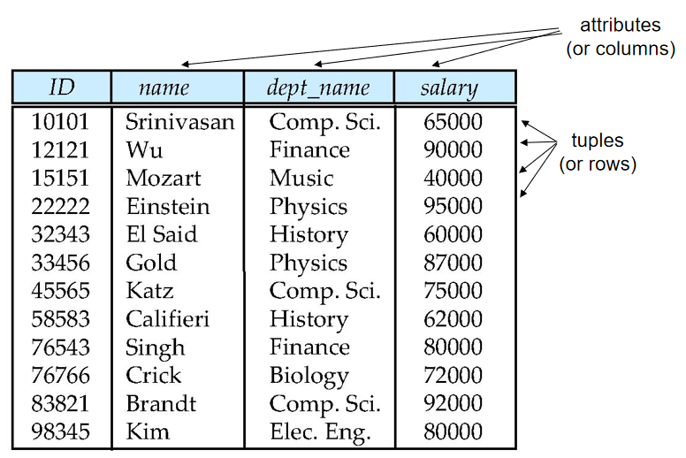
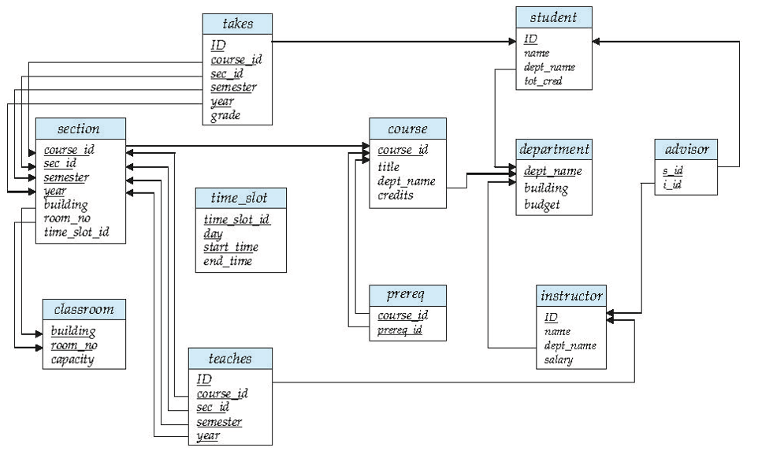
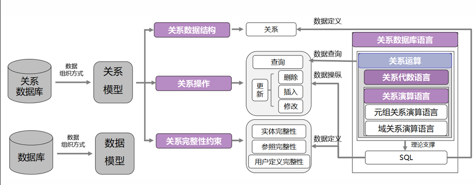
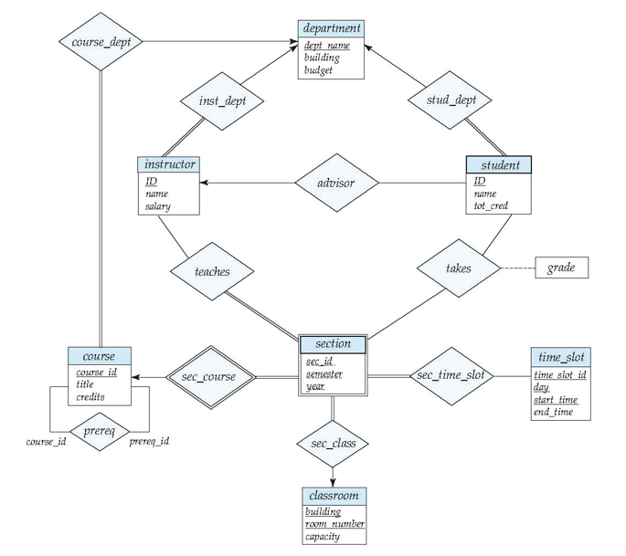

关系模型导论

属性（attributes）
属性（attributes）：表中每一列数据。A1, A2, …, An
- 域（Domain）的定义
- 每个属性允许的值集合称为该属性的域。
- 域就是属性的 “取值规则表”，规定了这个属性能填哪些值、不能填哪些值。
- 原子性（Atomicity）
- 属性值（通常）要求是原子的，即不可分割的。
- 属性值必须是 “最小不可拆分单元”，不能包含多个独立信息的组合。
[!tip]
特殊值 NULL 是每个域的成员，表示值 “未知”。NULL 值会给许多操作的定义带来复杂性。
不管域的正常取值是什么，都默认包含 NULL 这个 “特殊值”，专门用来表示 “不知道这个属性的值”，但它会让运算规则变得复杂。
关系模式和关系实例
关系模式是关系的 “结构定义”（静态框架），关系实例是关系的 “具体数据”（动态内容）
关系模式（Relation Schema）
设 A₁、A₂、…、Aₙ为属性，则R = (A₁, A₂, …, Aₙ)是一个关系模式。
- 示例：教师（ID，姓名，部门名称，薪资）。
- 关系模式就是给 “表” 下的 “结构定义”，规定了这张表有哪些列、列的名称是什么，相当于一张 “空表的表头”，只定规则不包含具体数据。同时模式还隐含了各属性对应的 “域”（允许的取值范围）
关系实例（Relation Instance）
关系的当前值（关系实例）由一张表指定。关系 r 中的元素 t 是一个元组，由表中的一行表示。
- 形式上，给定集合 D₁、D₂、…、Dₙ（各属性的域），关系 r 是 D₁×D₂×…×Dₙ的子集。因此，关系是 n 元组（a₁,a₂,…,aₙ）的集合，其中每个 aᵢ∈Dᵢ（aᵢ属于 Dᵢ）。
- D₁×D₂×…×Dₙ是所有属性域的 “笛卡尔积”（简单说就是 “所有可能的组合”），而关系实例 r 是其中 “有实际意义的子集”，这些子集以 “n 元组”（即表中的行）形式存在，且每个元组的每个值都符合对应属性的域规则。
- 关系实例就是 “填了数据的表”，表中的每一行就是一个元组（tuple），每一列对应关系模式中定义的一个属性，且当前所有行的集合构成了该关系在某一时刻的实例。
关系（relation）
系是无序的。元组的顺序无关紧要（元组可以以任意顺序存储）。
- 关系本质是 “集合”（数学中的集合），而集合的特点是 “元素无序”—— 就像你手里的一堆苹果，不管是先拿红的还是先拿绿的，这堆苹果的本质没变。对应到数据库表中，就是行的排列顺序不影响表的内容和意义。
- 元组的集合完全相同，只是顺序不同，不影响数据的本质含义。即元组进行不同排序但是集合相同的表视为一个关系实例
码/键（keys）
- 超码（super key）：一个或一组属性，能够唯一区分一个关系的任何一个元组。例如
{ID, name}，{ID}- 设 K 是关系模式 R 的属性子集（K⊆R）。若 K 的属性值足以唯一标识关系模式 R 的任何可能关系实例 r (R) 中的每个元组，则 K 是 R 的超键。但是需要注意超键中可能会有冗余属性， “多余属性不影响唯一性”
- 超键就是 “能唯一找到一行数据的属性组合”，只要知道超键的取值，就能确定唯一的元组，不会重复。
- 候选码（candidate key）：最小的（包含属性个数最少）超码。例如
{ID}- 若超键 K 是 “最小的”（即移除 K 中的任何一个属性后，K 就不再是超键），则 K 是候选键。
- 候选键是 “精简版超键”，不能再去掉任何一个属性，否则就失去唯一标识能力，是 “最经济” 的超键。
- 主码（primary key）：候选码中挑出一个作为主码，任何关系只能有一个主码
- 从多个候选键中选择一个作为主键（通常选最常用、最简单的）。
- 主键是 “官方指定的候选键”，是关系中唯一的 “主要标识”，用于日常数据操作（如查询、关联其他表），是数据库设计中人为选定的。
- 优先选属性个数少（最好单属性）、取值稳定（不会轻易修改，如 ID）、非空的候选键。
- 外码（foreign key）：一个表中某一列的所有值一定出现在另一张表的某一列，且在另一张表中为主码
- 外键约束是指 “一个关系中的某个属性值，必须在另一个关系的主键中存在”。其中，包含外键的关系叫 “引用关系”，被引用的关系叫 “被引用关系”。
- 外键是 “跨表的关联纽带”，确保两个表之间的数据一致性，避免出现 “无对应记录” 的无效数据。
[!tip]
- 候选键可能多个：不是所有关系都只有一个候选键。例如 “学生选课” 关系（学号，课程 ID，成绩），候选键是 {学号，课程 ID}（单独学号对应多个选课记录，单独课程 ID 也对应多个记录，组合后才唯一）；若增加 “选课编号” 且唯一，则 {选课编号} 和 {学号，课程 ID} 都是候选键，需选一个作为主键。
- 外键不一定是单属性：外键可以是属性组合，但必须与被引用表的主键结构一致（被引用表主键是组合属性，外键也需对应组合）。例如 “订单详情” 表的外键 {订单号，商品 ID}，引用 “订单商品” 表的主键 {订单号，商品 ID}。
- 外键允许 NULL：外键约束是 “值存在则必须在被引用表中”，但可以取 NULL（表示 “暂时无关联”）。例如教师表中 dept_name 为 NULL，可能表示 “教师暂未分配部门”，这是允许的（除非额外设置非空约束）。
- 主键必须非空且唯一：主键是关系的核心标识，不能取 NULL（否则无法标识元组），也不能重复，这是数据库自动强制的约束；而候选键本身也隐含 “非空唯一” 特性（否则无法唯一标识）。
大学数据库模式图

系/部门表 — 存储大学各院系的信息，包括系名、所在建筑和预算
- department(dept_name,building,budget);
教师表 — 存储教师信息，包括工号、姓名、所属系和工资
- instructor(ID, name,dept_name,salary);
课程表 — 存储课程信息，包括课程号、课程名称、开课系和学分
- course(course_id,title,dept_name,credits);
课程班表 — 存储课程的具体开课班次信息，包括课程号、班次号、学期、年份、上课地点和时间
- section(course_id,sec_id,semester,year,building,room_number,time_slot_id);
授课表 — 关联教师与课程班，记录哪位教师教授哪个课程班
- teaches(ID,course_id,section_id,semester,year);
学生表 — 存储学生信息，包括学号、姓名、所属系和总学分
- student(ID,name,dept_name,tot_cred);
先修课表 — 存储课程之间的先修关系（哪门课是另一门课的先修课）
- prereq(course_id,prereq_id);
导师表 — 关联学生与教师，记录哪位教师指导哪位学生
- Advisor(s_id,i_id)
选课表 — 记录学生选课情况及成绩
- takes(ID,course_id,sec_id,semester,year,grade)
教室表 — 存储教室信息，包括建筑名、房间号和容量
- classroom(building,room_number,capacity)
时间段表 — 存储上课时间段信息，包括时间段ID、星期、开始时间和结束时间
- time_slot(time_slot_id,day,start_time,end_time)
其中粗体字段表示主键（Primary Key），用于唯一标识表中的每条记录。
elational Query Languages（关系查询语言）
- 关系数据库语言：包含关系运算、关系代数语言、关系演算语言，是实现数据定义、查询、操纵的工具。
- 关系运算：是关系查询语言的理论基础，分为 6 个基本运算（选择、投影等）。
- 关系代数语言：过程化语言（需要描述 “怎么查”），比如用选择、投影的组合来写查询。
- 关系演算语言：声明式语言（只需描述 “查什么”），分为元组关系演算（以元组为变量）和域关系演算（以属性域为变量）。
- SQL：是实际应用的数据库语言，基于关系代数和关系演算的理论（比如 SQL 的
SELECT对应投影，WHERE对应选择）。

- 关系查询语言分为两类，核心区别是 “是否描述查询过程”：
- 过程化语言（如关系代数）：
- 需要明确写出 “查询的步骤”（先选哪些行、再选哪些列、怎么组合表）。
- 声明式语言（如关系演算）：
- 只需描述 “想要的结果满足什么条件”，不用管 “怎么得到结果”。
关系运算的基本操作，直接对应 SQL 的语法：
| 关系运算 | SQL 语法示例 | 作用 |
|---|---|---|
| 选择（σ） | WHERE 部门名称="计算机科学" |
筛选行 |
| 投影（Π） | SELECT 姓名 |
筛选列 |
| 并（∪） | UNION |
合并结果（去重） |
| 笛卡尔积（×） | FROM 教师, 课程 |
表的组合（需配合WHERE筛选） |
| 自然连接（⋈） | FROM 教师 JOIN 课程 ON 教师.ID=课程.教师ID |
基于共有属性连接表 |
大学数据库 E-R 图

关系代数(Relational Algebra)
Procedural language（过程化语言）
- 关系代数是一种过程化语言。
- 过程化意味着需要明确描述 “查询的步骤”—— 比如 “先筛选行、再选列、最后合并”，而不是只说 “想要什么结果”。
Six basic operators（6 个基本运算）关系代数的 6 个基本运算，是所有复杂查询的 “基础积木”：
| 运算名称 | 符号 | 作用 | 输入数量 | | ----------------------------- | ---- | ------------------------------------ | -------- | | 选择（select） | σ | 筛选关系中的元组（行） | 1 个关系 | | 投影（project） | Π | 选择关系中的属性（列） | 1 个关系 | | 并（union） | ∪ | 合并两个关系的元组（去重） | 2 个关系 | | 差（set difference） | – | 取属于第一个关系但不属于第二个的元组 | 2 个关系 | | 笛卡尔积（Cartesian product） | × | 组合两个关系的所有元组 | 2 个关系 | | 重命名（rename） | ρ | 给关系或属性起新名字 | |
运算的封闭性
- 这些运算以一个或两个关系为输入，产生一个新关系作为结果。
- 无论用哪个运算，输出都是 “关系”（二维表），这保证了运算可以 “链式组合”（比如先做选择，再做投影，结果还是关系，能继续参与其他运算）。
选择运算（Select Operation）
符号：
σ_p(r)σ：选择运算的符号（读作 “sigma”）p：选择谓词（Selection Predicate），即筛选条件r：要操作的关系（输入的表）
形式化定义：
σ_p(r) = {t | t ∈ r 且 p(t)}- 选择运算的结果是所有属于关系 r、且满足谓词 p 的元组 t 的集合。
- 从表 r 中，把满足条件 p 的行挑出来，组成一个新表。
- 选择谓词
p是命题演算公式，由 “项” 通过逻辑连接符组合而成：- 逻辑连接符：
∧（与，同时满足）、∨（或，满足任意一个）、¬（非，不满足） - 项的形式
<属性> op <属性>（属性之间比较，比如 “薪资> 平均薪资”）<属性> op <常量>（属性与固定值比较，比如 “部门名称 = 'Physics'”）
- 比较运算符（op）：
=（等于）、≠（不等于）、>（大于）、≥（大于等于）、<（小于）、≤（小于等于）
- 逻辑连接符：
[!TIP]
- 谓词的逻辑优先级：
- 逻辑连接符的优先级是：
¬（非） >∧（与） >∨（或）。- 若不确定优先级，建议用括号明确顺序，比如
σ_(dept_name="Physics" ∨ dept_name="Comp. Sci.") ∧ salary>80000(r)（先选部门，再筛薪资）。- 与投影运算的顺序：
- 若需要 “先筛选行，再选列”，必须先做选择、再做投影（否则投影会去掉筛选需要的属性）。
- 错误示例：
Π_name(σ_dept_name="Physics"(instructor))是对的；但σ_dept_name="Physics"(Π_name(instructor))会出错（投影后只剩 name 列，没有 dept_name 列，无法筛选）。- NULL 值的影响：
- 若属性值为 NULL，比较结果是 “未知”，不会被筛选出来。比如 “薪资 = NULL” 的教师，不会被
σ_salary>60000选中，也不会被σ_salary≤60000选中。
投影运算（Project Operation）
- 符号：
Π_{A₁,A₂,…,Aₖ}(r)Π：投影运算的符号（读作 “pi”）A₁,A₂,…,Aₖ：要保留的属性名列表r：要操作的关系（输入的表）
- 定义：投影运算的结果是 “从关系 r 中删除未被列出的列后，得到的 k 列关系”；同时，因为关系是集合（不允许重复元组），结果会自动移除重复的行。
[!TIP]
- 投影会丢失信息：投影是 “不可逆” 的 —— 如果投影后删除了某列，无法从投影结果恢复原关系的完整数据。比如投影
Π_{name}(instructor)后，无法知道每个 name 对应的 ID 或薪资。- 投影后的重复行必被删除：即使原关系没有重复行，投影后可能因 “保留列的值相同” 产生重复，此时会自动去重（因为关系是集合）。比如两个不同教师的 name 和 salary 完全相同，投影
Π_{name,salary}后会合并为一行。
并运算（Union Operation）
- 符号:
r ∪ sr和s：两个待合并的关系（输入的表）∪：并运算符号，读作 “union”
- 形式化定义
r ∪ s = {t | t ∈ r or t ∈ s}- 并运算的结果是 “所有属于关系 r、或属于关系 s、或同时属于两者的元组 t 的集合”。
- 把两个表的行合并到一起，自动去掉重复的行，最终得到 “包含两个表所有不重复元组” 的新表。
[!important]
并运算不是任意两个表都能做，有严格的兼容性要求：
- 相同元数（arity）：两个关系的属性个数（列数）必须完全一致。比如 r 有 3 列，s 也必须有 3 列，不能一个 3 列一个 2 列。
- 属性域兼容：对应位置的属性域（取值类型）必须相同。比如 r 的第 2 列是 “整数型薪资”，s 的第 2 列也必须是 “整数型”（不能是字符串或日期），确保合并后列的含义一致。
[!tip]
- 与 SQL 中 UNION 的区别：关系代数的并运算默认去重；SQL 中
UNION也去重，但UNION ALL不去重（保留所有重复元组），实际应用中需注意区分。- 属性名不影响有效性：只要列数相同、对应列域兼容，即使属性名不同也能运算（结果的属性名通常取第一个关系的）。比如 r 的第 1 列是 “course_id”，s 的第 1 列是 “c_id”，只要都是课程 ID 的整数类型，就能合并。
差运算（Set Difference Operation）
符号
r – s（注意：部分教材r \ s)r：被减关系（主关系，保留其独有元组）s：减关系（用于剔除元组的参考关系）–：差运算符号，读作 “set difference”
形式化定义
r – s = {t | t ∈ r and t ∉ s}- 差运算的结果是 “所有属于关系 r、但不属于关系 s 的元组 t 的集合”。
- 以 r 为 “基准表”，把 r 中与 s 完全相同的行去掉，剩下的就是结果，相当于 “只留 r 独有的数据”。
差运算和并运算的兼容性要求完全一致，缺一不可:相同元数（arity）和属性域兼容：
笛卡尔积（Cartesian-Product Operation）
- 符号
r × sr和s：待组合的两个关系（输入表）×：笛卡尔积运算符号，读作 “Cartesian product”
- 形式化定义
r × s = {t⌒q | t ∈ r and q ∈ s}- 笛卡尔积的结果是 “所有由关系 r 中的元组 t 和关系 s 中的元组 q 连接而成的新元组的集合”（
t⌒q表示将 t 和 q 拼接成一个新元组）。 - 把 r 的每一行和 s 的每一行都 “配对” 一次，生成所有可能的组合行，比如 r 有 3 行、s 有 2 行，结果就有 3×2=6 行。
- 笛卡尔积的结果是 “所有由关系 r 中的元组 t 和关系 s 中的元组 q 连接而成的新元组的集合”（
属性不相交假设
- 默认假设 r (R) 和 s (S) 的属性集不相交（即 R∩S=∅，没有重名属性）。
- 含义：若两关系属性名完全不同，组合后新关系的属性名直接保留原属性名（如 r 的 A、B 和 s 的 C、D，组合后为 A、B、C、D）。
- 重命名要求：若属性名重复（如 r 和 s 都有属性 B），必须先用重命名运算（ρ） 给重复属性改名，否则无法区分（比如改为 r.B 和 s.B）。
重命名运算（配合笛卡尔积使用）
- 符号：
ρ_X(E)或ρ_新关系名(新属性1,新属性2)(E) - 作用：给关系或属性起新名字，解决笛卡尔积中的 “属性名冲突” 问题。
- 示例：
ρ_s(r)表示将关系 r 重命名为 s；ρ_r(ra=A, rb=B)(r)表示将 r 的属性 A 改为 ra、B 改为 rb。
自连接对比 + 集合差
- 利用自连接对比 + 集合差求出最大值
- 排除所有 “非最大值”，剩下的就是最大值。
Π_{balance}(account) - Π_{account.balance}(σ_{account.balance < d.balance}(account × ρ_d(account)))ρ_d(account)：将account表重命名为d（区分两个 “账户表”，一个是原始表account，一个是对比表d）。account × ρ_d(account)：做自连接，生成 “所有余额两两对比” 的组合（7 行 ×7 行 = 49 行）- 筛选 “非最大值”（σ_{account.balance < d.balance}）
- 集合差运算（总余额 - 非最大值余额）
关系代数的附加运算（Additional Operations）
- 附加运算不增加关系代数的计算能力（所有附加运算都能通过 6 个基本运算组合实现），但能将复杂的基本运算组合 “封装” 成更简洁的形式，大幅简化常见查询的表达式，降低书写和理解成本。简化查询的 “语法糖”
| 附加运算 | 核心价值（简化的场景） | 等价的基本运算组合 |
|---|---|---|
| 集合交 | 求两个兼容关系的共有元组 | 差运算组合（r - (r - s)） |
| 自然连接 | 基于共有属性的关联（自动去重共有列） | 笛卡尔积 + 选择 + 投影 |
| 除运算 | 解决 “对于所有” 的查询（如选修所有课程） | 投影 + 笛卡尔积 + 差运算 |
| 赋值运算 | 拆分复杂查询，降低嵌套深度 | 表达式直接替换（无新增运算） |
集合交运算（Set-Intersection Operation）
集合交运算是一种简化的集合操作，用于提取 “同时存在于两个兼容关系中的所有元组”，不新增关系代数的计算能力（完全可通过差运算推导）
符号：
r ∩ s（读作 “r 交 s”，∩是集合交的专用符号）定义翻译：
r ∩ s = { t | t ∈ r and t ∈ s }即 “关系 r 和 s 的交集，是所有既属于 r、又属于 s 的元组 t 的集合”。
把两个表想象成 “两个数据集合”，交集就是 “两个集合重叠的部分”—— 只有那些在两个表中完全相同的行，才会出现在交集结果中。
[!caution]
和并运算（∪）、差运算（–）一样，集合交运算对输入关系有 “兼容性” 要求，否则无法判断 “元组是否相同”：即相同元数（arity）和属性域兼容，其中属性域兼容即同一位置的列的属性可以比较即可
核心公式：
r ∩ s = r – (r – s)即 “r 和 s 的交集，等于从 r 中剔除‘属于 r 但不属于 s 的元组’后剩余的部分”。
[!tip]
误解 “交集” 与 “自然连接” 的区别：
交集（
r ∩ s）：要求两关系结构完全兼容，结果是 “共有元组”，列数与原关系相同；自然连接（r ⋈ s）：基于共有属性关联，结果是 “关联后的新元组”，列数是两关系列数之和减去重复的共有属性列数。
例：r（客户名）和 s（客户名）的交集是 “共有客户名”（1 列）；r（客户名，贷款号）和 s（客户名，账户号）的自然连接是 “客户 - 贷款 - 账户”（3 列），二者完全不同。
连接运算（Join Operation）
- 连接运算（Join Operation）是关系代数中实现多表数据关联的核心运算，本质是 “笛卡尔积 + 选择运算” 的封装 —— 先将两个关系的所有元组两两组合（笛卡尔积），再筛选出满足特定条件的有效组合，最终生成包含两表关键信息的新关系。
笛卡尔积的冗余
“为什么需要连接”—— 因为直接使用笛卡尔积会产生大量无意义的冗余数据，而连接运算通过筛选条件剔除冗余，保留有效关联
- 笛卡尔积定义：
instructor × teaches会将instructor（教师表）的每个元组，与teaches（授课表）的每个元组强制组合。 - 假设
instructor有 10 个教师，teaches有 20 条授课记录，笛卡尔积会生成10×20=200条记录。 - 这 200 条记录中，大部分是 “教师与非其授课课程” 的无效组合（比如 “爱因斯坦” 关联到 “计算机科学” 的课程），只有 “教师 ID 与授课表教师 ID 一致” 的组合才有效。
而连接运算的核心作用：剔除冗余，保留有效关联，即从笛卡尔积中筛选出 “教师与其实际授课” 的有效记录，需要添加选择条件：σ_{instructor.id = teaches.id}(instructor × teaches)
连接运算（θ- 连接）的正式定义与符号
连接运算（通常指θ- 连接，Theta-Join）是 “笛卡尔积” 与 “选择运算” 的结合，可直接用一个运算符封装这两个步骤，避免表达式冗长。
符号：
r ⋈_θ s（读作 “r theta 连接 s”）
r和s：参与连接的两个关系（左表、右表）；θ（theta）：连接谓词（筛选条件），由属性、比较运算符（=、≠、>、≥等）和逻辑运算符（∧、∨）组成。
形式化公式：
r ⋈_θ s = σ_θ (r × s)即 “连接运算的结果 = 对 r 和 s 的笛卡尔积，应用选择谓词 θ 筛选后的关系”。
[!tip]
等值连接（Equi-Join）：θ 为 “属性相等” 的特殊 θ- 连接
- 定义：当连接谓词
θ仅由 “属性 = 属性” 的等式组成时，称为等值连接，是实际应用中最常用的连接类型。- 示例：
instructor ⋈_{instructor.id = teaches.id} teaches就是典型的等值连接（通过id相等关联）。- 特点：结果中会保留重复的 “连接属性”（如上述例子中，结果会同时包含
instructor.id和teaches.id两列，且值完全相同）。
自然连接运算（Natural-Join Operation）
自然连接（Natural-Join）是θ- 连接（等值连接）的简化与优化版，无需手动指定关联条件，自动基于两个关系的 “共有属性”（名称和域都相同的属性）做等值连接，同时自动删除重复的共有属性列，最终生成结构简洁、语义清晰的关联结果。
- 设关系
r基于模式R（属性集合），关系s基于模式S（属性集合），自然连接的前提是：R和S存在共有属性（即R ∩ S ≠ ∅），且共有属性的域（取值类型）完全兼容（如r的B是整数，s的B也必须是整数）
自然连接r ⋈ s（符号⋈无下标，代表 “自动关联”）的运算分 3 步：
- 找共有属性：自动识别
r和s的共有属性（如R=(A,B,C,D)、S=(E,B,D)，共有属性是B和D）； - 等值关联筛选：对
r × s（笛卡尔积）做选择运算，仅保留 “所有共有属性值完全相等” 的元组（即σ_{r.B=s.B ∧ r.D=s.D}(r × s)）； 去重共有属性：从筛选结果中，删除重复的共有属性列（仅保留一套共有属性，如删除
s.B和s.D，只留r.B和r.D）。自然连接是 “笛卡尔积 + 选择 + 投影” ：
r ⋈ s = Π_{r.A, r.B, r.C, r.D, s.E}(σ_{r.B=s.B ∧ r.D=s.D}(r × s))
除法运算（Division Operation）
若q=r÷s，则q是满足q×s⊆r的最大关系”。通俗来讲，q是所有符合 “其与s做笛卡尔积后，结果完全包含在原关系r中” 这一条件的关系里，范围最大的那个。
- 定义：r÷s
- R=(A1,A2,...Am,B1,B2,...Bn),S=(B1,B2,...Bn)
- 解释：前提是
s表的属性包含于r表。则r表属性去掉s表的属性之后，r表中包含s表所有数据的元组被选出。 r ÷ s = ∏_{R-S}(r) – ∏_{R-S}( (∏_{R-S}(r) × s) – ∏_{R-S,S}(r) )
[!TIP]
除法运算的本质是 “验证包含关系”：
- 输入：关系
r（“主体 - 客体” 关联）、关系s（“所有客体”）。- 过程：通过 “候选集生成→理想组合→排除不满足候选”，筛选出 “与
s中所有客体都有关联的主体”。- 输出：满足 “包含所有客体” 的主体集合（即
r ÷ s）。
赋值运算（Assignment Operation）
赋值运算的本质是 “给中间结果起名字”：当查询需要多步运算（如除法、多表嵌套关联）时，直接写嵌套表达式会非常冗长（比如除法的基础运算表达式），而赋值运算可以用 “临时变量” 存储每一步的结果，让查询逻辑像 “分步解题” 一样清晰。
temp←expression，查询结果保存在临时表- 赋值的左部必须是 “临时关系变量”
比如 r ÷ s = ∏_{R-S}(r) – ∏_{R-S}( (∏_{R-S}(r) × s) – ∏_{R-S,S}(r) ),可以通过赋值运算拆分
// 步骤1：筛选Perryridge有贷款的客户
temp1 ← ∏_{customer_name}(σ_{branch_name="Perryridge"}(borrower ⋈ loan))
// 步骤2：筛选Redwood有账户的客户
temp2 ← ∏_{customer_name}(σ_{branch_name="Redwood"}(depositor ⋈ account))
// 步骤3：输出最终结果
result = temp1 – temp2
扩展关系代数运算（Extended Relational-Algebra Operations）
- 扩展关系代数运算（Extended Relational-Algebra Operations） 是对传统关系代数（并、交、差、笛卡尔积、选择、投影）的补充和增强。
- 扩展运算中最核心的三类：广义投影（Generalized Projection）、聚集函数（Aggregate Functions） 和 外连接（Outer Join），包括其定义、解决的问题、语法 / 逻辑及实例。
| 扩展运算 | 解决的核心问题 | 关键应用场景 | 对应 SQL 能力 |
|---|---|---|---|
| 广义投影 | 传统投影无法生成计算列 | 数据转换、派生字段（如总价、年龄） | SELECT中的表达式（如price*qty） |
| 聚集函数 | 无法对多行数据汇总统计 | 统计分析（如平均成绩、销售总和） | COUNT()/AVG()+GROUP BY |
| 外连接 | 传统连接丢弃非匹配行，导致数据丢失 | 完整保留数据（如未选课的学生） | LEFT/RIGHT/FULL JOIN |
广义投影（Generalized Projection）
广义投影是对传统关系代数中投影运算（Projection）的扩展，核心是允许在投影过程中使用 “算术表达式、函数或常量组合”，而非仅选择关系中已有的属性列。
- 广义投影允许在 “投影列表” 中写算术表达式（如
limit – credit_balance），基于已有属性生成新的计算结果。 - 输入：任意关系代数表达式
E（可以是一张基础表，也可以是筛选、连接后的结果关系）； - 输出：包含
F₁, F₂, …, Fₙ的关系，每个F是 “表达式结果列”（可给列起别名，如credit-available）。 - 表达式规则：F₁~Fₙ必须是 “合法的算术表达式”，可包含：
- 关系
E的属性（如limit、credit_balance）； - 算术运算符（
+、-、×、/等）； - 常量（如
100、0.8等，例：π_customer_name, credit_balance×0.8 (credit_info)）； - 部分教材还扩展支持内置函数（如字符串函数
UPPER(customer_name)、日期函数YEAR(register_date)）。
- 关系
[!tip]
算 “每个客户还能再消费多少金额”—— 即 “可支配额度 = 信贷额度（limit） - 信贷余额（credit_balance）”。
π_customer_name, (limit – credit_balance) AS credit-available (credit_info)[!CAUTION]
若表达式中某属性值为
NULL（如某客户的limit为NULL），则整个表达式结果为NULL（如NULL - 1500 = NULL），需提前通过筛选（σ）处理NULL值。
聚集函数与聚集运算（Aggregate Functions and Operations）
聚集函数（Aggregate Functions）与聚集运算（Aggregate Operation）是关系代数中用于对多行数据进行汇总统计的核心扩展能力。传统关系代数仅能处理 “行级” 数据（如筛选某一行、组合两行），而聚集运算通过 “分组 + 函数计算”，实现了 “多行→单一值” 或 “分组→组内单一值” 的统计分析，是实现业务中 “求和、求平均、计数” 等需求的关键工具。
聚集函数（Aggregate Functions）
聚集函数的核心是接收一组数据（集合），返回一个单一结果值，用于描述这组数据的 “汇总特征”。
| 聚集函数 | 核心作用 | 适用数据类型 | 示例（基于账户余额balance） |
|---|---|---|---|
avg |
计算一组值的平均值 | 数值型（整数、小数） | avg(balance)：计算所有账户的平均余额 |
min |
找出一组值的最小值 | 数值型、日期型、字符串型 | min(balance)：找出余额最小的账户金额 |
max |
找出一组值的最大值 | 数值型、日期型、字符串型 | max(balance)：找出余额最大的账户金额 |
sum |
计算一组值的总和 | 数值型 | sum(balance)：计算所有账户的余额总和 |
count |
统计一组值的非空值个数（或行数） | 任意类型（通常用于主键 / 非空列） | count(account_number)：统计账户总数 |
[!TIP]
- 输入是 “集合”：函数的参数必须是 “一组数据”（如某列的所有值、某分组内某列的值），而非单个值；
- 输出是 “单值”：无论输入集合有多少行，输出始终是一个结果值（如 100 个账户的
avg(balance)结果是一个数字）；- 忽略 NULL 值：若集合中存在
NULL值（如某账户的balance为NULL），聚集函数会自动忽略该值（count除外：count(*)统计所有行数，包括NULL行；count(列名)仅统计非空行）。
聚集运算（Aggregate Operation）
聚集运算正是将 “分组（Grouping）” 与 “聚集函数” 结合，实现更灵活的统计分析。
聚集运算的语法为：G₁, G₂, ..., Gₙ ℑ F₁(A₁), F₂(A₂), ..., Fₖ(Aₖ) (E)（符号ℑ表示聚集运算，部分教材也用γ）
各部分含义解析：
E：任意关系代数表达式（输入关系，可以是基础表、筛选结果、连接结果等）；G₁, G₂, ..., Gₙ：分组属性（Grouping Attributes）—— 按这些属性的值对E中的行分组，相同值的行归为一组（若为空，则不分组，对整个关系做全局汇总）；F₁(A₁), ..., Fₖ(Aₖ)：聚集项—— 对每个分组，应用聚集函数F到属性A上（如sum(balance)、avg(age)）；- 最终结果：包含 “分组属性列” 和 “聚集结果列” 的关系。
外连接（Outer Join）
外连接（Outer Join）是传统连接（如自然连接、θ 连接）的关键扩展，核心解决了传统连接 “仅保留匹配行、丢弃非匹配行” 导致的数据丢失问题。
在保留 “匹配行” 的基础上，通过NULL值填充，完整保留某一侧或两侧关系中的 “非匹配行”，确保原始数据的信息完整性，是实际业务中 “全量展示关联结果”（如 “所有客户及其订单，包括无订单客户”）的核心运算。
- 运算逻辑：“匹配行 + 非匹配行”外连接的运算分两步：
- 第一步：执行传统连接（如自然连接），得到所有 “匹配行”；
- 第二步：将 “某一侧关系中未参与匹配的行” 添加到结果中，对这些行的 “非匹配列”（即来自另一侧关系的列）填充
NULL。
根据 “保留哪一侧非匹配行”，外连接分为左外连接、右外连接、全外连接三类。
1. 左外连接（Left Outer Join）：保留左表所有行
- 定义：以 “左表（如
loan）” 为基准，保留左表的所有行，右表（如borrower）仅保留匹配行；右表非匹配列填NULL。 - 符号：
左表 ⟕ 右表（或左表 LEFT OUTER JOIN 右表）。
2. 右外连接（Right Outer Join）：保留右表所有行
- 定义：以 “右表（如
borrower）” 为基准，保留右表的所有行，左表（如loan）仅保留匹配行；左表非匹配列填NULL。 - 符号：
左表 ⟖ 右表（或左表 RIGHT OUTER JOIN 右表）。
3. 全外连接（Full Outer Join）：保留两侧所有行
- 定义：保留左表和右表的所有行，两侧非匹配列均填
NULL（即左外连接 + 右外连接的并集）。 - 符号：
左表 ⟗ 右表（或左表 FULL OUTER JOIN 右表）。
NULL 值（Null Values）
NULL 值是用于表示 “数据未知、数据不存在或数据不适用于该元组” 的特殊标记，并非 “空字符串” 或 “0” 等具体值。
- “未知值”（Unknown Value）：数据存在，但当前无法获取（如 “某客户的年龄已存在，但未录入系统”）；
- “不存在值”（Non-Existent Value）：数据本身不适用于该元组（如 “未选课的学生，其‘课程成绩’属性不存在”）；
- ≠ 空字符串 / 0：NULL 不是 “”（空字符串），也不是 “0”（数字）—— 空字符串是 “已知的空数据”，0 是 “已知的数值”，而 NULL 是 “未知 / 不存在” 的状态。
算术运算：含 NULL 的表达式结果必为 NULL
“The result of any arithmetic expression involving null is null.”
- 由于 NULL 是 “未知值”，任何包含未知值的计算结果也必然是未知的；
- 示例：
3 + NULL = NULL（已知数 + 未知值 = 未知）；NULL × 10 = NULL（未知值 × 已知数 = 未知）；(loan.amount - NULL) = NULL（贷款金额 - 未知值 = 未知）。
聚集函数：自动忽略 NULL 值
“Aggregate functions simply ignore null values (as in SQL)”
- 逻辑：聚集函数（
sum/avg/min/max/count）统计 “已知数据”，NULL 作为未知值不参与计算； - 注意：
count(*)是例外 ——count(*)统计元组总数（包括含 NULL 的元组），count(列名)仅统计该列非 NULL 值的个数；
去重（Duplicate Elimination）与分组（Grouping）：NULL 视为相同值
“For duplicate elimination and grouping, null is treated like any other value, and two nulls are assumed to be the same (as in SQL)”
- 逻辑：为了保证去重和分组的一致性，即使 NULL 是 “未知值”，也默认两个 NULL 代表 “相同的未知状态”；
- 示例：
- 去重（
δ运算）：若某列有两个 NULL 值，去重后仅保留 1 个 NULL； - 分组（
GROUP BY）：若按 “课程成绩” 分组，所有成绩为 NULL 的元组会被归为同一组。
- 去重（
NULL 值的比较逻辑：三值逻辑（Three-Valued Logic）
传统逻辑只有 “真（True）” 和 “假（False）”，但由于 NULL 的存在，关系代数中的比较运算引入了第三值 “未知（Unknown）”—— 这是理解 NULL 比较的核心
任何与 NULL 的直接比较（如 “等于、大于、小于”）都无法确定结果，因此返回 “Unknown”；
（1）OR 运算（逻辑或）：只要有一个为真，结果为真；全为假则为假；否则为未知
T OR T = TT OR F = TT OR U = T（真与任何值 OR，结果都是真）F OR F = FF OR U = U（假与未知 OR，结果无法确定，为未知）U OR U = U（未知与未知 OR，结果无法确定，为未知）
（2）AND 运算（逻辑与）：只有全为真，结果为真；有一个为假则为假；否则为未知
T AND T = TT AND F = FT AND U = U（真与未知 AND，结果无法确定，为未知）F AND F = FF AND U = F（假与任何值 AND，结果都是假）U AND U = U（未知与未知 AND，结果无法确定，为未知）
（3）NOT 运算（逻辑非）：取反；未知的非仍为未知
NOT T = FNOT F = TNOT U = U（未知的否定仍是未知，无法确定）
修改关系代数（Modification of the Database）
“Modification of the Database” 指修改关系代数，它是对数据库中的数据内容进行变更的操作，主要包含删除（Deletion）、插入（Insertion）和更新（Updating）三类核心操作
删除操作（Deletion）
删除操作（Deletion） 是用于从关系（表）中移除符合特定条件的 “完整元组（行）” 的核心修改操作，而非仅删除某列的部分值。
r ← r – E
r：待删除数据的目标关系（如account表、loan表）；E：关系代数查询表达式，用于筛选出 “需要从r中删除的元组”（结果是r的子集）；←：赋值运算符，将 “原关系r减去待删元组E后的新关系” 重新赋值给r，实现数据覆盖（即完成删除）。- 删除后的关系 = 原关系中 “不包含在
E中的元组”，确保仅移除符合条件的行。
[!TIP]
- “先查询，后删除”：
E本质是一个查询，建议先单独执行E（如σ_branch_name="Perryridge" (account)），确认筛选出的元组是预期要删除的，再执行r ← r – E；- 级联删除（Cascading Deletion）：若删除的元组在其他关系中存在 “引用”（如
account表的account_number被depositor表引用），需同步删除关联关系中的元组（教材示例 2 明确体现了这一点），否则会导致 “悬空元组”（引用了不存在的数据）；- 无条件删除风险：若
E等于r（如account ← account – account），会删除r中的所有元组（清空表），需谨慎使用；- 权限控制：删除操作通常需要数据库的 “删除权限（DELETE privilege）”，普通用户可能无权限删除系统表或其他用户的表。
插入操作（Insertion）
插入操作（Insertion） 是向关系（表）中添加新元组（行）的核心修改操作，支持 “单条元组插入” 和 “批量查询结果插入” 两种模式。
r ← r ∪ E
r：待插入数据的目标关系（如account表、depositor表）；E：“待插入元组集合” 的来源，既可以是 “常量元组构成的集合”（如{(“A-973”, “Perryridge”, 1200)}），也可以是 “关系代数查询的结果”（如π_loan_number, branch_name, 200 (r1)）；←：赋值运算符，将 “原关系r与待插入元组E的并集” 重新赋值给r，实现数据覆盖（即完成插入）；插入后的关系 = 原关系
r中所有元组 +E中所有元组（自动去重）。
[!TIP]
- 属性数量与类型匹配：
E中的元组必须与目标关系r的 “属性数量一致、类型匹配”—— 如account表有(account_number, branch_name, balance)3 个属性，E中的元组必须是 3 个值，且分别为字符串、字符串、数值类型；- 主键唯一性：若
r定义了主键（如account表的account_number为主键），E中的元组主键值不能与r中已有的主键值重复，否则会触发 “主键冲突”，插入失败；- 非空约束：若
r的某属性定义为 “非空（NOT NULL）”（如branch_name不允许为NULL），E中的元组该属性不能为NULL，否则插入失败；- 外键约束：若
r的某属性是外键（如depositor表的account_number引用account表的account_number），E中的元组外键值必须在被引用表中存在（或为NULL，若允许），否则会触发 “外键冲突”，插入失败。
更新操作（Updating）
更新操作（Updating） 是用于修改关系（表）中已有元组（行）特定属性值的核心修改操作，无需改变元组的所有属性（区别于 “删除旧元组 + 插入新元组” 的间接修改方式）
r ← ρ_r( π_{F1, F2, ..., Fl}(r) )
- 符号含义：
r：待更新数据的目标关系（如account表）；F1, F2, ..., Fl：广义投影的表达式列表，对应r的每一个属性：- 若属性不更新：
Fi直接取原属性（如account_number不修改，F1=account_number）； - 若属性需更新：
Fi是 “基于原属性或常量的算术表达式”（如余额增加 5%，F3=balance×1.05）；
- 若属性不更新：
π_{F1,...Fl}(r)：通过广义投影生成 “所有元组修改后的值”，形成新的关系集合；ρ_r(...)：将投影结果重命名为r（确保与原关系名一致）；←：赋值运算符，用 “修改后的新关系” 覆盖原关系r，完成更新。
[!TIP]
- 表达式合法性：需修改属性的表达式
Fi必须合法 —— 仅含原关系的属性、常量和有效运算符（如balance×1.05合法，balance+name不合法，因类型不匹配）；- 属性覆盖完整性：
F1~Fl必须覆盖r的所有属性 —— 即使某属性不修改，也需在投影列表中明确保留（如account表有 3 个属性，投影列表必须包含 “账号、分行名、余额”，不能遗漏）；- 约束不破坏：修改后的值需满足原关系的约束（如主键唯一性、非空约束、外键约束）—— 例如将
account_number修改为已存在的值，会触发主键冲突；- 条件筛选精准性：若仅更新部分元组（如 “仅余额超 10000 的账户加息”），需先通过选择运算（
σ）筛选出目标元组，再执行投影，避免误改无关元组。